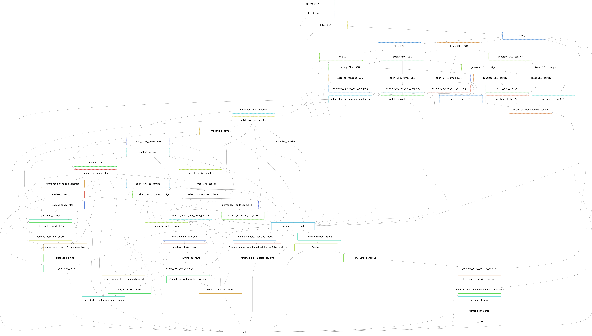
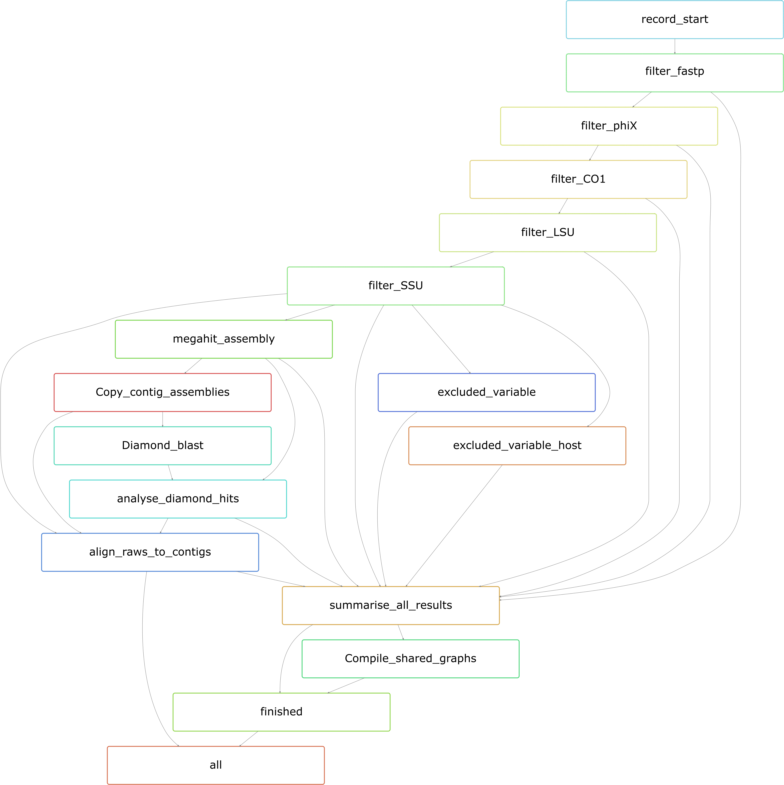

MetaDIVE Overview¶
MetaDIVE is a metagenomics analysis pipeline which specialises in the high accuracy and low false negative detection. of both known and highly novel viruses.
For a description of the pipelines performance see (Reference here for paper).
MetaDIVE is designed to assist with viral identification in a variety of circumstances ranging from broad viral discovery to scenarios where high precision and low false positive assignments are required. To achieve this goal, MetaDIVE utilises multiple checks to decrease the likelihood of any viruses being incorrectly assigned or missed. MetaDIVE is highly accurate for all virus types excluding phages where it is limited based on the potential of accidental phage embedding in the diversity of bacterial genomes sequenced as references already.
The ethos of MetaDIVE is to provide the user with clear and concise findings first and foremost but to also complement every finding with a way for the user to manually inspect the results so that confidence and certainty can be achieved. To help with this, MetaDIVE reports on many additional statistics which can help inform on assignment accuracy and provides reads/contigs as sorted results files to their assigned species for easy manual inspection.
The goal of accurate metagenomic analysis of both known and novel viruses is a complex one however, and as such to help users only investigate the analyses most relevant to their research MetaDIVE has been structured with a modular design where certain analysis can be turned on or off depending on the goal, the speed required, and the dataset type.
Below are two examples of the MetaDIVE workflow. The first image shows the workflow of MetaDIVE with every module activated
{kind=link}
The second, shows MetaDIVE with the core module activated.
{kind=link}
As can be seen in the above figures, almost all of the analyses MetaDIVE can perform are optional allowing for great versatility and flexability of the pipeline.
Here we will document each module specifically and provide a summary usecase to assist with whether the module is best for the user. Note: MetaDIVE uses a wide range of software to run. A full list of software and relevant citations can be found in References
Module 2: Microbiome Classification¶
Components¶
The identified rRNA and CO1 reads undergo stringent filtering with Bowtie2, last common ancestor analysis with MMseqs2 (Steinegger & Soding, 2017), assembly of rRNA contigs with Megahit, and BLASTn for species inference.
Results produced:¶
This module will produce a number of more comprehensive results specifically analysing the rRNA and CO1 regions of organisms in the sample. This allows for a more in depth and accurate analysis of bacterial communities and Eukaryote spp.
Key results include:
LCA graphs of read assignments to all species for the CO1 region, LSU regions and SSU regions.
Assembled contigs of the CO1 region, LSU regions and SSU regions and BLASTn results for their taxonomic assignments resulting in partial or complete regions for high abundance species.
Use cases:¶
This module is very fast and helps complement the bacterial and Eukaryote based limitations of other modules. As other modules are BLASTx first, they are prone to false positives and negatives in Bacterial/Eukaryote assignment in non coding regions. This module allows for more reliable assignments of the most abundant non viral species present with very low false positive rates due to assembling larger contigs of marker genes. Use this module if you are after some additional information on non viral spp. but don't need to assemble significant portions of bacterial/Eukaryote genomes.
Module 3: Dynamic Host Identification and Depletion¶
Components¶
Host species identification is performed using CO1 and rRNA reads, with the best matching whole genome downloaded via Entrez Direct (Kans, 2024). Reads are then aligned and depleted against the host genome using Bowtie2.
Results produced:¶
This module will allow for final read assignments to include a specific host species section allowing for a better understanding of the distribution of reads. This module also greatly speeds up analysis by removing host reads prior to assembly and taxonomic assignments and can reduce the chance of false positive assignments through endogenous elements.
Use cases:¶
This module is useful in nearly all cases purely for its ability to speed up all downstream analyses at no cost to accuracy. In some rare cases it may cause endogenous viruses to be filtered out e.g., FeLV but this typically only occurs when the virus is at ultra low abundance (a handful of reads total) and is rare even in those circumstances.
Module 4: Single Reads Analysis¶
Components¶
For reads not forming contigs, less stringent DIAMOND BLASTx and Kraken2 analyses are conducted. Viral-positive reads are clustered with CD-HIT (Fu et al., 2012), and representative reads are analysed with BLASTn.
Results produced:¶
This module produces several additional results summary files as well as a more detailed sample specific breakdown of results and subsets all reads to species specific folders allowing for manual inspection
Key results include:
Expanded summary results tables to include single reads in final read counts
interactive html tables/csv file showing read assignments, read complexity metrics and identity scores of matches of contigs/reads to each virus identified.
Individual folders per viral spp identified which contain all reads and contigs assigned to each virus for quick manual inspection
Use cases:¶
This module is useful for any situation where multiple viral species are expected (not sequencing specific viral isolates). It helps assign more reads to every virus helping build up generated viral genomes and can identify ultra low abundant viruses (those which are so low abundance they don't form contigs).
Module 5: Diverged read/contig detection¶
Components¶
All previously detected species within the pipeline with identities <95% to a reference genome are used to subset a DIAMOND database by species for rapid detection of ultra diverged reads and contigs through utilising the most sensitive detection settings in DIAMOND BLASTx (requires Diamond database to be built with TaxID information).
Results produced:¶
This module builds on Module 4 and specifically targets more diverged viruses. It detects all reads to viruses which were too diverged to be detected by Module 4.
Key results include:
csv file showing read assignments, read complexity metrics and identity scores of matches of contigs/reads to each virus identified updated to include additional diverged reads found.
additional reads and contigs added to each viral spp folder generated in Module 4.
Use cases:¶
This module is most useful when novel viral species are present in relatively low abundance (the whole genome isn't assembled). When the user is investigating understudied metagenomic samples e.g., environmental samples, viromes of understudied eukaryotes, this module will provide additional useful information at only small increases to run time and compute resources.